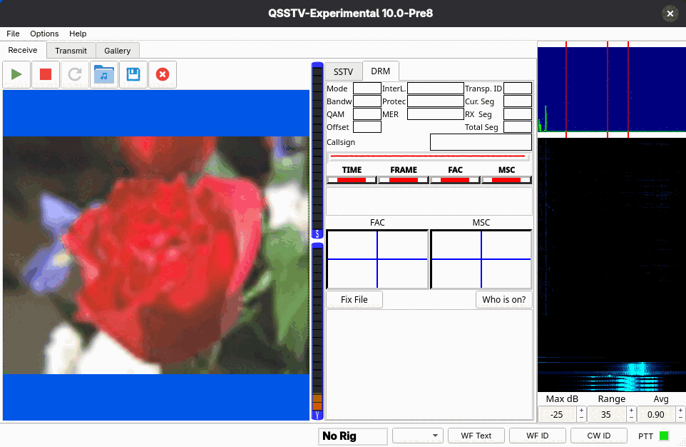

Receiving
Receiving an SSTV picture
- Connect your receiver's audio to the sound card input chosen in Configuration > Sound.
- Open the Receive tab and make sure the SSTV settings tab is selected.
- Tune the radio to the SSTV frequency (USB on the HF bands). Watch the spectrum: SSTV shows up as a signal moving between about 1200 and 2300 Hz.
- Leave Mode on Auto and the receiver detects the transmission mode and starts drawing the picture. The line below the settings shows the status, for example No sync or Receiving PD120.
- When the picture is complete it is saved automatically (if Autosave is on) and appears in the Gallery.

Toolbar
| Button | What it does |
|---|---|
| Green triangle | Start receiver. |
| Red square | Stop receiver. |
| Circular arrow | Restart receiver (start listening for a new picture). Not available in DRM mode. |
| Folder with a note | Decode SSTV from an audio file; same as File > Decode SSTV From File.... |
| Disk | Save the picture shown. This works for SSTV only; in DRM mode the program tells you it is not available. |
| Red circle with a cross | Clear the picture. |
Right-click menu
Right-click the picture for View, Properties, Copy and, on its own at the bottom, Clear, which does the same as the toolbar button.
SSTV settings
- Auto Slant
- Corrects slant automatically. Slant means the picture leans, usually because the transmitting and receiving sound cards run at slightly different sample rates. If it happens on every picture, calibrate your sound card (see Calibration).
- Autosave
- Saves the picture when it is complete.
- Sensitivity
- Low, Normal, High or DX. Higher is more sensitive: the receiver starts on weaker signals, but may start on noise more often. It also waits longer for a fading signal to come back: if the signal sinks into the noise in the middle of a picture, the picture stays open for at least 10 s (Low), 20 s (Normal) or 30 s (High), but never past the time the picture should be finished, and carries on in the same picture if the signal returns in time. Only a picture that has shown itself to be a real transmission gets that long wait: one that started from a VIS code, or that has had about a dozen sync pulses in consecutive lines. A start on noise is given up after a few lines, so noise does not tie up the receiver or end up as a picture.
- Mode
- Auto detects the mode from the transmission header. You can instead force one mode from the list (all the modes in SSTV modes).
- Default Image format
- The file format used for saved pictures (the common formats the build can write, such as png and jpg).
- Save if Complete (%)
- Interrupted pictures are only kept if at least this percentage of the picture's lines was received. The default is 25. Headless runs can override it with
--min-complete(see Decode from file and command line). - Call and LOG QSO
- When the sender includes an FSK ID, the callsign is filled in here and logged automatically. You can type a
callsign yourself and press LOG QSO. The log entry is broadcast as an ADIF record over UDP to
localhost, port 2333 by default, which logging programs with an ADIF UDP listener can pick up.
DRM display
Select the DRM settings tab to receive digital SSTV. See Digital SSTV (DRM) for background.

- Mode, Bandw, QAM, Offset, InterL., Protec
- The parameters of the signal being received, once decoded.
- MER
- Modulation error ratio, in dB, of the FAC and the MSC. Higher is better.
- Transp. ID, Cur. Seg, RX Seg, Total Seg
- Which picture and how many of its segments have arrived.
- Callsign
- The sender's callsign, if sent.
- TIME
- Time sync: the receiver has found the symbol timing of the signal.
- FRAME
- Frame sync: the start of the DRM transmission frame is locked.
- FAC
- Fast Access Channel decoded: the signal's mode and parameters are known.
- MSC
- Main Service Channel (the picture data): green means receiving data, yellow means this picture was already received, red means no valid data.
- FAC and MSC plots
- The constellation diagrams. A tight cluster of points means a clean signal.
- Fix File
- Asks the sender to resend the missing segments of an incomplete DRM picture (a BSR, "block status report"). See Fixing an incomplete picture.
- Who is on?
- Reads the Online Status Directory on the hybrid FTP server and lists, in the notification box below, the stations (callsign and status text) that published an online status within the last hour. Stations publish this when they start the program in DRM mode with the Operator page's online status option ticked (see Operator). The button needs a Host on the Hybrid page and does nothing without one; an empty list means nobody was seen, not that the server is broken. Your own entry is listed too if you have published one. Not shown on slow or low-resolution displays.
- Notification list
- The large box at the bottom shows RX notifications seen for the last DRM hybrid item. You usually get only a partial list because of timing, internet speeds, and the sender having read and deleted them already.
Where pictures go
Received SSTV pictures are saved to the RX SSTV Images directory and received DRM pictures to the RX DRM Images directory (Configuration > Directories). Both appear in the gallery. If FTP upload is enabled, received pictures are also uploaded (see FTP).
You can also feed the receiver from a recording instead of the sound card; see Decode from file and command line.